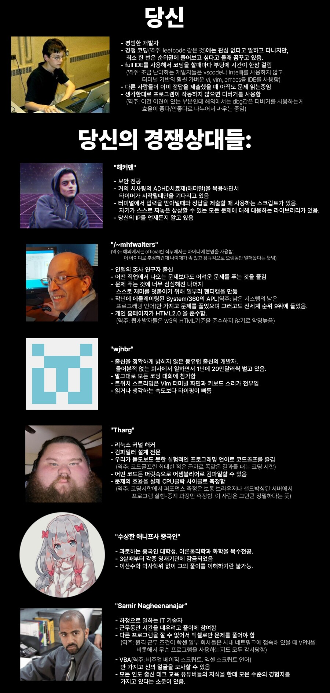

168 · 5 · 21 시간 전 · 원문

Tharg는 진짜 사람아니야...
수집 당시 댓글 5개
선장입수 · 18 시간 전
애니프사 중국인은 무슨 사펑 웹러너같냐 ㅋㅋ
아라사카 연구기관에 갇힌채로 훈련받는 해커도아니고 ㅋㅋ
닉네임팬 · 18 시간 전
+ AI
니소그 · 17 시간 전
이거 예전에 옵치 버전을 봤는데...
위도우메이커 - 애더럴을 치사량으로 복용한 프로게이머 지망생 한국인 고2
뭉키뭉키 · 17 시간 전
tourist 하는거 보고 있으면 ㄹㅇ 경이로움
웃는페페 · 13 시간 전
아!내가 20년전에 어셈으로 x86 아키텍쳐 제로베이스부터 커널, 프롬프트까지 짜봤다
tcp/ip 소켓 작업하다 취업함ㅋ
애니프사 중국인은 무슨 사펑 웹러너같냐 ㅋㅋ
아라사카 연구기관에 갇힌채로 훈련받는 해커도아니고 ㅋㅋ